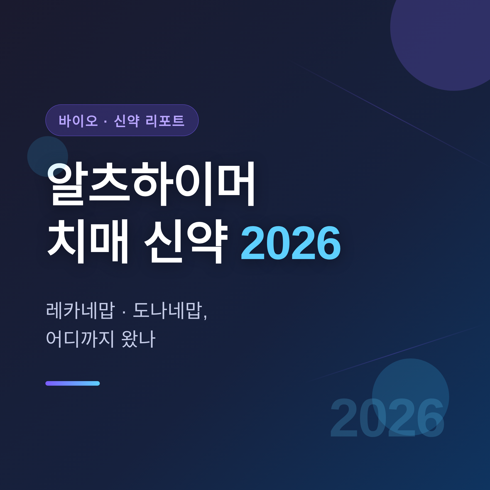
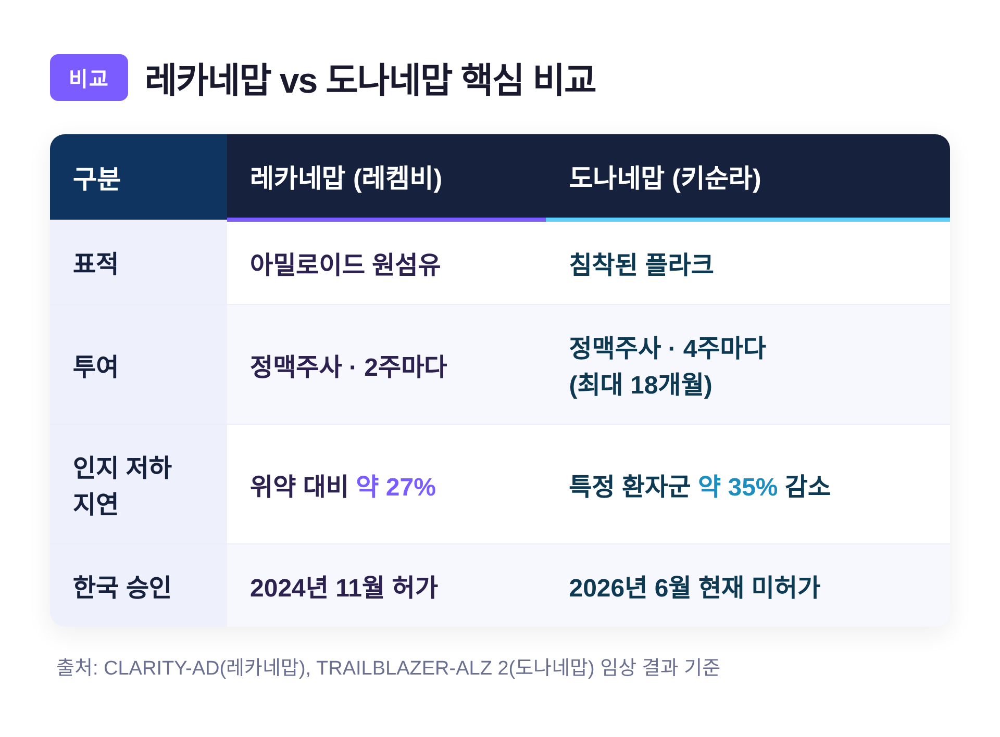
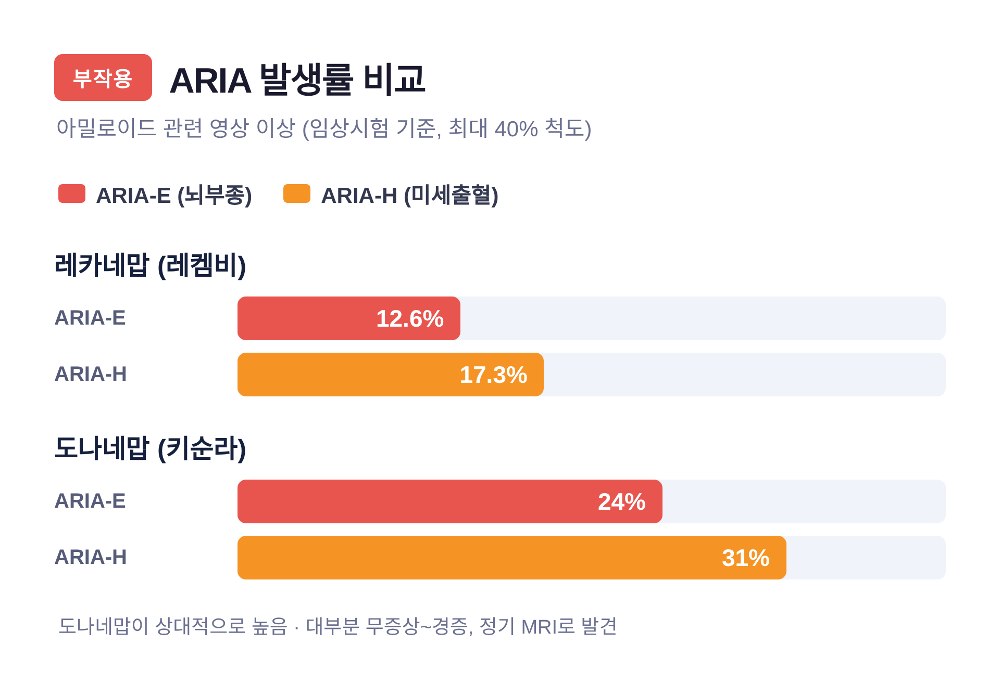
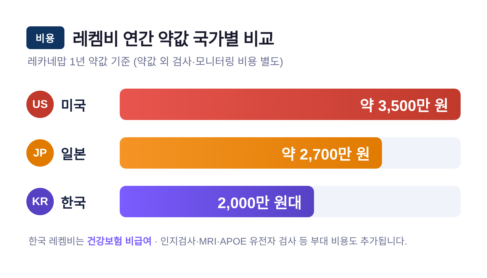

[바이오] 알츠하이머 치매 신약 2026 — 레카네맙·도나네맙, 어디까지 왔나

이번 글에서는 2026년 현재 알츠하이머 치매 신약이 어디까지 왔는지 정리해 보겠습니다.
핵심은 두 약, 레카네맙(레켐비)과 도나네맙(키순라)입니다.
효과와 한계를 함께 짚고, 진단 기술과 비용 현실까지 차분히 살펴보겠습니다.
먼저 결론부터 말씀드립니다.
두 약은 치매를 "완치"하지 못합니다. "진행을 늦추는" 약입니다.
한국에서는 레켐비만 허가됐고, 키순라는 아직 들어오지 못했습니다.
■ 왜 아밀로이드를 노리는가
알츠하이머병은 단백질 두 가지가 얽히며 진행됩니다.
신경세포 바깥에 쌓이는 베타-아밀로이드, 그리고 안쪽에 엉기는 타우입니다.
이 아밀로이드가 시냅스를 망가뜨린다는 것이 30여 년간 이어진 "아밀로이드 가설"입니다.
레카네맙과 도나네맙은 모두 이 아밀로이드를 겨냥한 항체 치료제입니다.
다만 한 가지 짚을 점이 있습니다.
아밀로이드를 걷어내도 인지 개선으로 충분히 이어지지 않는다는 회의론도 분명히 존재합니다.
그래서 학계의 무게중심은 타우 같은 다른 표적으로 조금씩 옮겨가는 중입니다.
■ 레카네맙·도나네맙, 무엇이 다른가
두 약은 같은 계열이지만 표적과 투여 방식이 다릅니다.

| 구분 | 레카네맙(레켐비) | 도나네맙(키순라) |
|---|---|---|
| 표적 | 아밀로이드 원섬유 | 침착된 플라크 |
| 투여 | 정맥주사, 2주마다 | 정맥주사, 4주마다(최대 18개월) |
| 인지 저하 지연 | 위약 대비 약 27% | 특정 환자군서 약 35% 감소 |
| 한국 승인 | 2024년 11월 허가 | 2026년 6월 현재 미허가 |
레카네맙은 CLARITY-AD 임상에서 18개월간 인지 저하를 약 27% 늦췄습니다.
도나네맙은 타우 저~중등도 환자군에서 약 35% 감소를 보였고, 18개월 시점 76.4%가 아밀로이드 제거에 도달했습니다.
여기서 오해를 줄여야 합니다.
"27% 지연"이 곧 환자가 느끼는 27%의 호전을 뜻하지는 않습니다.
영국 NICE의 분석을 빌리면, 실제 체감은 경증에서 중등도로 넘어가는 시점을 4~6개월 늦추는 정도입니다.
장기 데이터도 나왔습니다.
레켐비를 3년까지 이어간 결과 효과가 지속되는 신호가 확인됐습니다.
다만 치료를 중단하면 인지 저하 속도가 위약군 수준으로 되돌아갔습니다.
즉, 이 약은 한 번 맞고 끝나는 약이 아닙니다.
■ 부작용 ARIA, 가볍게 볼 수 없습니다
항아밀로이드 항체에서 가장 신경 써야 할 이상반응은 ARIA입니다.
'아밀로이드 관련 영상 이상'으로, 뇌부종 형태(ARIA-E)와 미세출혈 형태(ARIA-H)로 나뉩니다.

임상시험 기준 발생률은 이렇습니다.
레카네맙은 ARIA-E 12.6%, ARIA-H 17.3%였습니다.
도나네맙은 ARIA-E 24%, ARIA-H 31%로 상대적으로 높았습니다.
대부분은 무증상이거나 경증이고, 정기 MRI로 발견됩니다.
그러나 증상성 ARIA는 입원과 전문 관리가 필요할 수 있고, 드물게 사망 사례도 보고됐습니다.
APOE ε4 동형접합 보유자, 고령, 항혈전제 복용자는 특히 신중해야 합니다.
예전에는 약이 없어 진행을 지켜만 봤습니다.
지금은 약이 생겼습니다만, 그 대가로 꾸준한 MRI 모니터링과 위험 관리가 따라옵니다.
■ 피 한 방울로 진단하는 시대
치료만큼 진단도 빠르게 바뀌고 있습니다.
2025년 5월, 세계 최초의 알츠하이머 혈액검사가 미국 FDA 승인을 받았습니다.
후지레비오의 검사로, 혈장 속 두 단백질(pTau217과 베타-아밀로이드)의 비율을 측정합니다.
이 비율은 아밀로이드 PET, 뇌척수액 검사와 양성 91.7%, 음성 97.3%로 일치했습니다.
기존 진단은 침습적인 척수액 검사나 고가의 PET에 기대야 했습니다.
혈액검사는 그 문턱을 크게 낮출 잠재력을 지녔습니다.
다만 단독 확진 도구는 아닙니다.
인지검사와 병력을 함께 봐야 하며, 대상도 증상이 있는 55세 이상으로 한정됩니다.
■ 비용과 접근성이라는 현실
약이 있어도 닿지 못하면 의미가 줄어듭니다.
한국 레켐비 출시가는 연간 2,000만 원대로, 건강보험이 적용되지 않는 비급여입니다.
처방 전 인지검사, MRI, 아밀로이드 확인, APOE 유전자 검사까지 부대 비용도 만만치 않습니다.

해외도 사정이 간단치 않습니다.
영국 NICE는 두 약 모두 NHS 정규 사용을 권고하지 않았습니다.
효과에 비해 비용과 모니터링 부담이 과도하다는 판단이었습니다.
키순라는 미국·일본·중국·유럽에서 차례로 허가됐습니다.
그런데 한국만 멈춰 있습니다.
식약처가 한국인 가교임상 데이터를 요구했기 때문입니다.
일라이릴리가 임상을 마무리 단계까지 진행했지만, 국내 사용은 약 3년 뒤로 전망됩니다.
■ 그다음 약들은 준비되고 있는가
파이프라인은 두텁습니다.
2025~2026년 기준 약 150여 개 약물이 190여 건의 임상에서 평가되고 있습니다.
눈에 띄는 변화는 표적의 이동입니다.
아밀로이드 비중은 줄고, 타우를 노리는 약물이 약 6%에서 20%로 늘었습니다.
주목할 후보도 있습니다.
로슈의 트론티네맙은 혈액뇌장벽 투과를 높인 항체로, 임상에서 환자 92%가 아밀로이드 음성으로 전환됐고 ARIA 발생은 5% 미만이었습니다.
안전성 면에서 의미 있는 신호입니다.
일라이릴리의 렘터네투그는 3상이 진행 중입니다.
물론 임상 단계의 결과입니다.
아직 끝난 이야기가 아니라, 지켜봐야 할 이야기입니다.
끝으로 한 마디만 더 드리겠습니다.
30년 만에 원인을 직접 건드리는 약이 나왔다는 것은 분명한 진전입니다.
다만 이 약들은 완치제가 아니라, 시간을 조금 벌어주는 약입니다.
"치매 정복은 아직 도착이 아니라, 길의 한복판입니다."
이 글은 의학적 진단이나 처방을 대신하지 않습니다.
치료 여부는 반드시 전문의와 상담해 결정하시길 권합니다.
가족 중 누군가를 떠올리며 읽으셨다면, 그 한 번의 상담이 가장 빠른 첫걸음일지도 모릅니다.